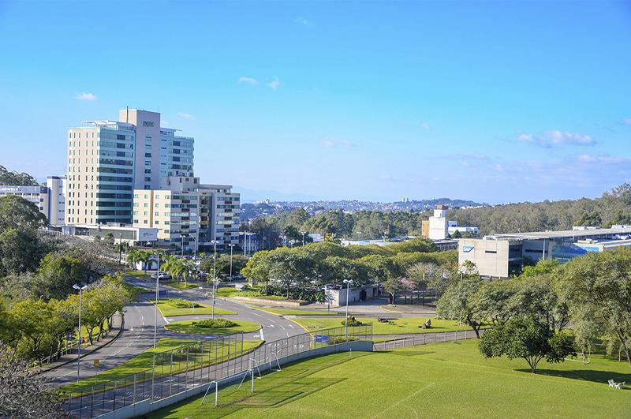
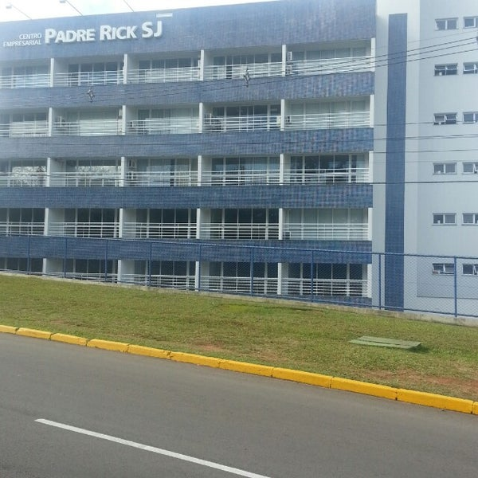
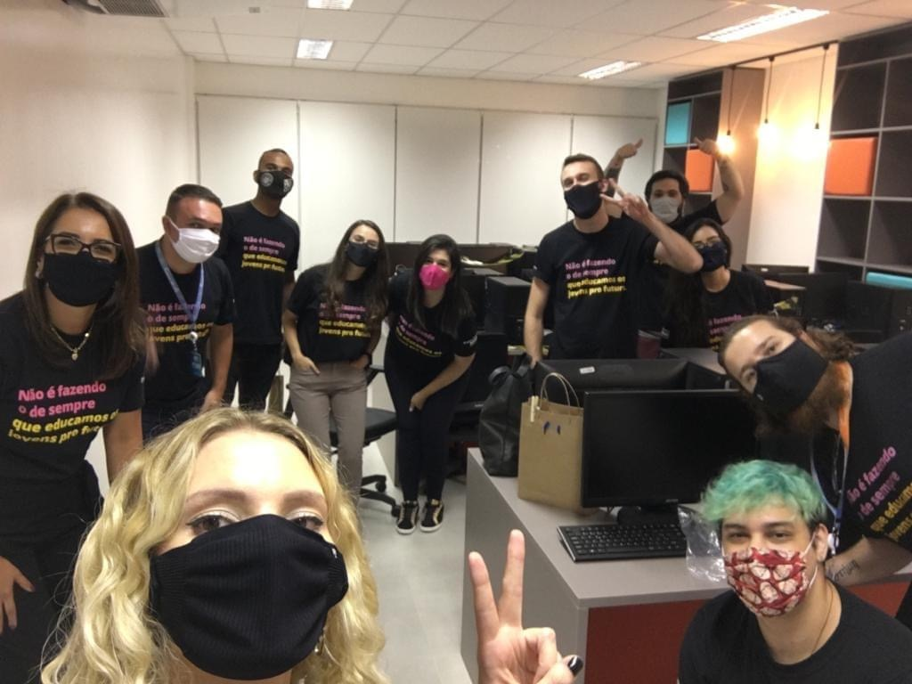
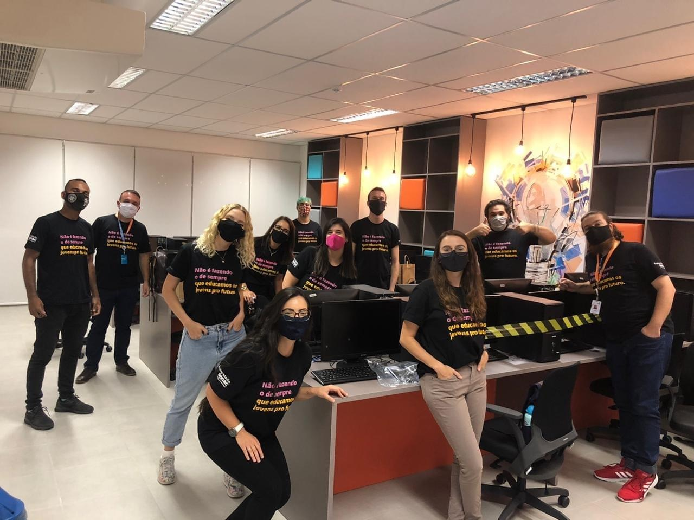
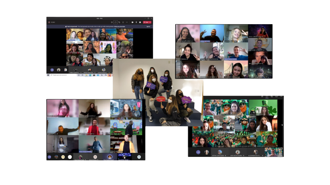
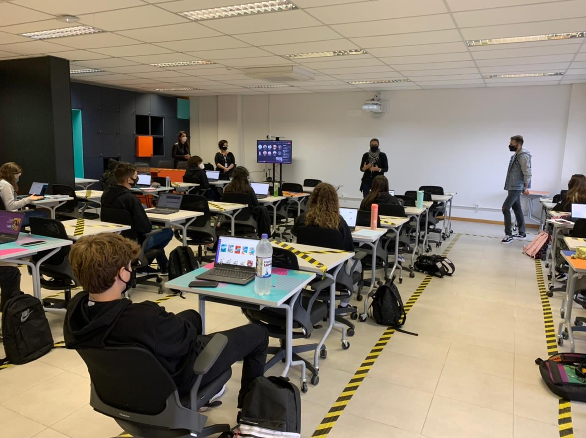

Senac São Leopoldo lança o Senac Ensino Médio. As aulas, que iniciam em março de 2021 e serão realizadas no Parque Tecnológico São Leopoldo - Tecnosinos,
oportunizam que o estudante vivencie de forma concreta a construção do conhecimento por meio de metodologias estimulantes e desafiadoras, que possibilitam
a transformação tanto do contexto em que vivem quanto de si mesmos. Integrado ao curso Técnico em Informática para Internet, o estudante termina o ensino
médio já com uma profissão e um projeto de vida para chamar de seu.
O curso, que compreende toda a Base Nacional Comum Curricular (BNCC) do Ensino Médio, também desenvolve competências relativas aplicações para internet
(Web e Web Mobile), além de preparar o estudante para o Exame Nacional do Ensino Médio (ENEM), para o vestibular e para o mercado de trabalho.
Com duração de três anos, o curso oportuniza uma experiência educacional realizada por meio de métodos, metodologias e estratégias que proporcionam o
desenvolvimento de competências de maneira prática e reflexiva. Além disso, o modelo de ensino conta com um corpo de professores preparados para atuar
em um nível educacional interdisciplinar, incentivando os jovens a atuarem de forma protagonista frente aos desafios que serão propostos.
BENEFÍCIOS SENAC-RS:
- Professores excelentes e preparados;
- Ensino dinâmico e inovador;
- Educação de qualidade;
- Excelente câmpus e estrutura;
- Novo método de ensino;
- Adequação às novas tecnologias;
- Preparação para o ENEM;
- Preparação para o futuro;
- Metodologia premiada.
METODOLOGIAS DE ENSINO:
- Baseada nas normas da Base Nacional Comum Curricular (BNCC);
- Quatro áreas principais, são elas:
Matemática e suas tecnologias;
Linguagens e suas tecnologias;
Ciências da Natureza e suas tecnologias;
Ciências Humanas e suas tecnologias.
- Três materias adicionais:
Projeto de vida;
Projeto Profissional;
Técnico de informática para a internet.
- Aprendizagem baseada nas competências do profissional do século XXI;
- Projeto que perdura os três anos de curso... Visando os Objetivos do Desenvolvimento Sustentável da ONU;
- Relação forte com a tecnologia, cadernos e livros didáticos virtuais;
- Avaliação qualitativa, e não quantitativa, visando a real aprendizagem do aluno;
- Trabalhos em equipe, para um ambiente mais coletivo e harmônico;
- Aprendizado baseado em projetos, inclusive interdiscplinares.
VÍDEOS EXPLICATIVOS SOBRE O ENSINO MÉDIO SENAC-RS:
CONHEÇA O CÂMPUS SENAC SÃO LEOPOLDO - ENSINO MÉDIO:


CURIOSIDADE TECNOSINOS:
No tecnosinos, onde as aulas do EM Senac São Leopoldo serão ministradas, há diversas oportunidades
de estágio para Técnico de Informática, curso técnico lecionado na escola, abrindo assim, variadas
oportunidades profissionais aos alunos.
CONHEÇA A EQUIPE DO SENAC SÃO LEOPOLDO - ENSINO MÉDIO:


MOMENTOS TURMA 1B EM SENAC SÃO LEOPOLDO:


RECOMENDARIA O EM SENAC-RS?
Claro! Dentre os motivos estão:
- Ótimo custo benefício;
- Equipe extremamente excepcional e encantadora;
- Todas as vantagens da metodologia, que prepara para o futuro;
- Liberdade de aprendizagem do aluno;
- EAD excepcional;
- Ótima relação escola-aluno;
- Infraestrutura excelente;
- Ótimas iniciativas.
O QUE MEU AIML (AGENTE CONVERSACIONAL) SABE?
Benefícios do Ensino Médio Senac;
Senac-RS;
O que são ODS(s)?
Recomendaria o Ensino Médio Senac?
CONVERSE COM O AGENTE CONVERSACIONAL NO SEGUINTE LINK: